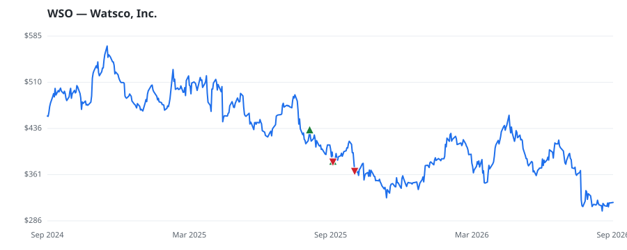

bullish · bearish · n/a — dots: price>SMA10 · SMA10>SMA50 · SMA50>SMA200 · up>down volume (20d)
Capital Goods · large cap · ★ 1 buyer(s) sit on a committee that regulates this industry
Members who bought WSO earned a dollar-weighted -7.8% from their disclosure dates, versus +0.6% for the S&P 500 over the same holding windows (-8.4% alpha).

▲ green = a disclosed purchase · ▼ red = a disclosed sale (plotted on disclosure date)
Watsco is the largest HVAC and refrigeration products distributor in North America with approximately 13% market share. The company primarily operates in the United States (90% of revenue) with significant exposure in the Sunbelt states. Watsco also has operations in Canada, Latin America, and the Caribbean. The company's customer base comprises more than 120,000 dealers and contractors serving the replacement and new-construction HVAC/R markets for residential and light-commercial applications. As much as 20% of residential HVAC units are distributed through Watsco in any given year. Revenue WHOLESALE-HARDWARE & PLUMBING & HEATING EQUIPMENT & SUPPLIES · website
| Revenue | $7.2B | Net income | $587.6M |
|---|---|---|---|
| Operating income | $720.3M | Diluted EPS | $12.25 |
| Assets | $4.4B | Equity | $3.2B |
| Member | Chamber | Out-performer | Disclosed buys $ | Return on buys |
|---|---|---|---|---|
| Valerie Hoyle ★ | house | — | $8K | -3.9% |
| Lisa McClain | house | — | $8K | -11.7% |
Disclosed $ figures are bracket midpoints — filings report ranges (e.g. $1,001–$15,000), not exact amounts.
| Fund | Fund alpha vs SPY | Position | % of book |
|---|---|---|---|
| Prospect Capital Advisors, LLC | +20% | $3M | 1.5% |
| Whetstone Capital Advisors, LLC | +56% | $0M | 0.1% |
Hedge data: SEC EDGAR 13F · ranked funds beat SPY in >50% of their quarters · fund alpha = mirror-portfolio return minus SPY.